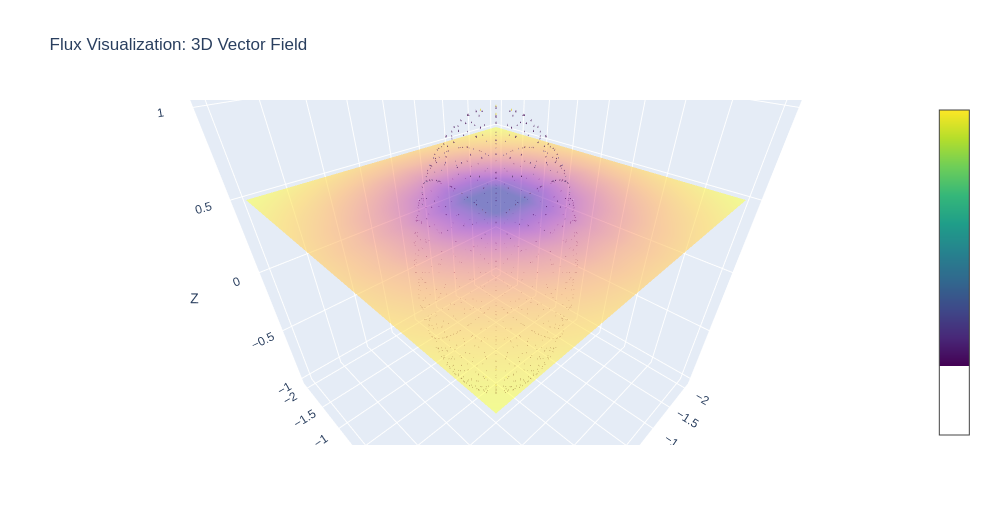
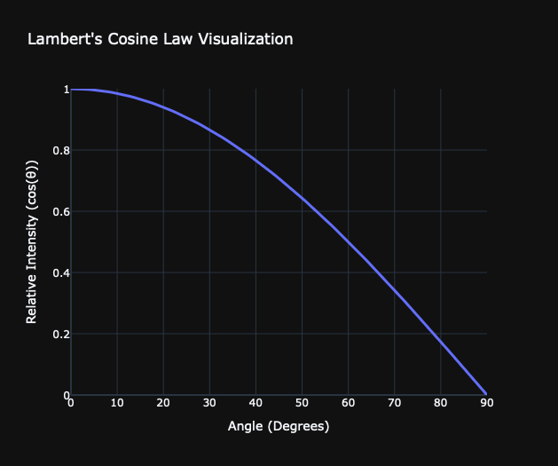

**Computer Graphics Summary**
Welcome to the Computer Graphics course summary! This guide provides an intuitive, high-level overview of the key concepts discussed in the Computer Graphics course taught by Prof. Dr. M. Gross & Dr. Marios Papas at ETH Zurich 2024 (https://cgl.ethz.ch/teaching/cg24/home.php).
This summary was created by [Sven Pfiffner](https://github.com/SvenPfiffner) to prepare for the final exam and made available to the public with the hope that it will be useful to others. If you find any errors or have suggestions for improvement, please feel free to open an issue or pull request on the [GitHub repository](https://github.com/SvenPfiffner/ComputerGraphicsSummary). Please note that this page closely follows the material taught during the course and all credit for the underlying theory goes to Prof. Dr. M. Gross, Dr. Marios Papas, their team and the ETH Zurich.
Quantities of light
==============================================================
**Flux** is a measure of how much light passes through a surface (or boundary) in a given amount of time. Imagine a bounding sphere around a lightbulb that emits equally in all directions. The light that passes through the sphere is the flux. We formalize flux as
$$
\Phi(A) \; \; \left[ \frac{J}{s} = W \right]
$$

**Irradiance** is a measure of how much power from light is recieved per unit area. Think of sunlight hitting your skin.
- If you stand in direct sunlight, you feel more warmth because more light energy is hitting your skin per second $\rightarrow$ higher irradiance.
- If you stand in the shade, you feel less warmth because less light energy is hitting your skin per second $\rightarrow$ lower irradiance.
- If you use a magnifying glass to focus sunlight on your skin, you feel a burning sensation because the light energy is concentrated on a smaller area $\rightarrow$ higher irradiance.
As irradiance is a measure of power per unit area, it essentially breaks down to flux per unit area and can thus be formalized as
$$
E(x) = \frac{d\Phi(A)}{dA} \; \; \left[ \frac{W}{m^2} \right]
$$
**Radiosity** is a measure of how much power is emitted by a surface per unit area. As this is the inverse of irradiance, its formalization is equivalent. Think of a lightbulb emitting light in all directions. The radiosity is the power emitted by the lightbulb per unit area of the lightbulb's surface. We have
$$
B(x) = \frac{d\Phi(A)}{dA} \; \; \left[ \frac{W}{m^2} \right]
$$
**Radiant Intensity** is a measure of how much light is emitted in a given direction. It is the flux emitted by a light source per unit solid angle. It tells us how focused or spread out the light is. Think of the following example
- The sun emits a huge amount of power (flux), but it spreads in all directions, so the radiant intensity is moderate.
- A laser pointer emits a small amount of power, but it is focused in a very narrow beam, so the radiant intensity is high.
We have
$$
I(\omega) = \frac{d\Phi(\omega)}{d\omega} \; \; \left[ \frac{W}{sr} \right]
$$
where $\omega$ is the solid angle of the beam.
**Radiance** measures how much light travels in a specific direction from a specific surface area. It is the most fundamental quantity in computer graphics as it directly corresponds to what our eyes and cameras percieve as brightness. Think of the following
- If you look directly into a flashlight, it appears very bright (high radiance).
- If you look atht the beam from the side, it appears dimmer (lower radiance).
- The flashlight still emits the same amount of light (flux does not change), but its brightness depends on the viewing angle.
In other words, the radiance is radiant intensity weighted by the cosine of the angle between the direction of the light and the normal of the surface. We have
$$
L(x, \omega) = \frac{d^2\Phi(\omega)}{dA \cdot d\omega \cdot \cos(\theta)} \; \; \left[ \frac{W}{m^2 \cdot sr} \right]
$$
where $\theta$ is the angle between the normal of the surface and the direction of the light.
Lamberts Cosine Law
==============================================================
Lamberts Cosine Law is a fundamental prinziple in computer graphics. It describes how light interacts with diffuse surfaces, which reflect light evenly in all directions.
The brightness of a surface depends not only on the insensity of the light source but also on the angle at which the light hits the surface.
- When light strikes a surface perpendicularly, it appears brightest.
- When light hits at an angle, it spreads out over a larger area, making each small part of the surface recieve less light.
- When light is at a grazing angle, the surface recieves very little light, making it appear darker.

Shape Representation
==============================================================
## Parametric Representation
Imagine you are drawing a curve on a piece of paper. One way to describe this curve is by listing a series of points $(x,y)$ that make up the curve. But what if you could describe the whole curve using just a single equation? This is where **parametric representations** come in.
Instead of directly describing the curve as $y = f(x)$, we introduce an extra variable - let's call it $t$ (a parameter) - and define both $x$ and $y$ in terms of $t$:
$$
x = x(t), y = y(t)
$$
As $t$ changes, it traces out the curve. Think of $t$ as a slider that moves along the curve, generating points.
In 3D, we can extend the idea further by using two parameters, $u$ and $v$, to define a **surface**:
$$
x = x(u,v), y = y(u,v), z = z(u,v)
$$
**Parametric Circle** is represented by the formula:
$$
p(t) = r(\cos(t), \sin(t)) \; \; t \in [0, 2\pi]
$$
**Parametric Sphere** is represented by the formula:
$$
p(u,v) = r(\cos(u)\cos(v), \sin(u)\cos(v), \sin(v)) \\
(u,v) \in [0, 2\pi] \times [\frac{-\pi}{2}, \frac{\pi}{2}]
$$
## Implicit Representation
Imagine you're trying to describe a circle on a piece of paper. One way is using the equation:
$$
x^2 + y^2 = r^2
$$
This equation doesn't give you individual points like parametric equations do. Instead, it defines a condition: any point $(x,y)$ that satisfies this equation lies on the circle.
This is the essence of implicit representations - instead of describing how to move along a shape, we describe a rule that points must follow.